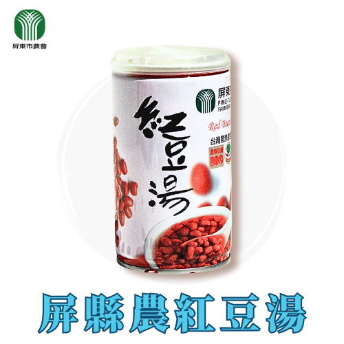
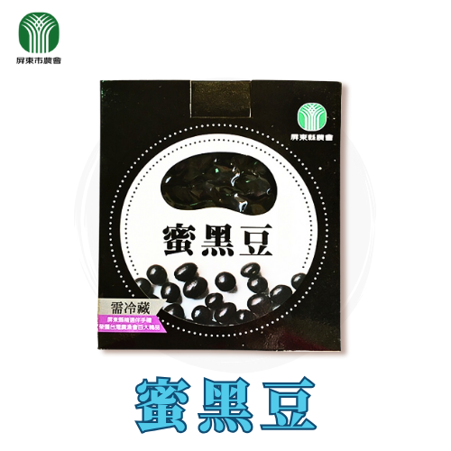

屏縣農紅豆湯
NT$45 · 320g/罐
紅豆顆粒飽滿細緻綿密，傳統工法製成，甜度適中，展現道地古早味。

屏東縣農會
屏東市 · 台灣國境之南，境內氣候宜人四季如春，以農業及觀光為發展主力
看產品屏東縣，台灣國境之南，境內氣候宜人四季如春，是以農業及觀光為發展主力的大縣，北與高雄市為界，地處熱帶地區，富有濃厚熱帶風情。地方農產豐富。

NT$45 · 320g/罐
紅豆顆粒飽滿細緻綿密，傳統工法製成，甜度適中，展現道地古早味。

NT$120 · 300g/包
高雄七號黑豆，富植物蛋白與維生素，口感Q彈，古法熬煮，拆封即食美味傳承。